Report quality issues, run proactive audits and close out daily checklists for every location you cover.
© 2026 Team Quality Services. All rights reserved.
Sign in with your TQS account to continue.
Don't have access yet? Ask your regional manager to add you.